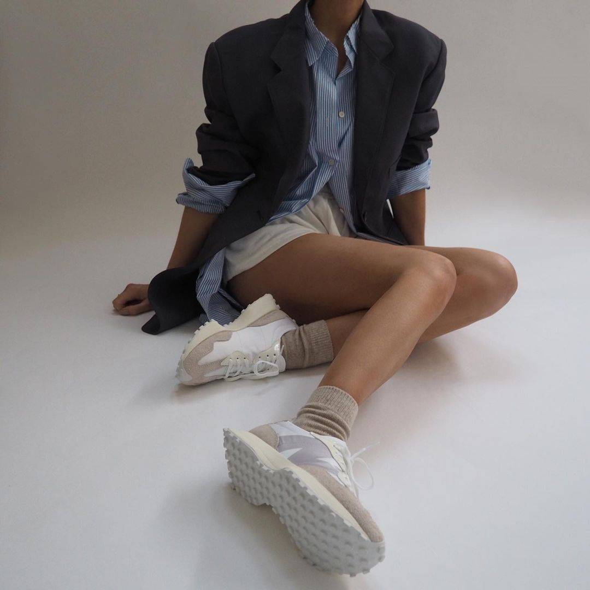
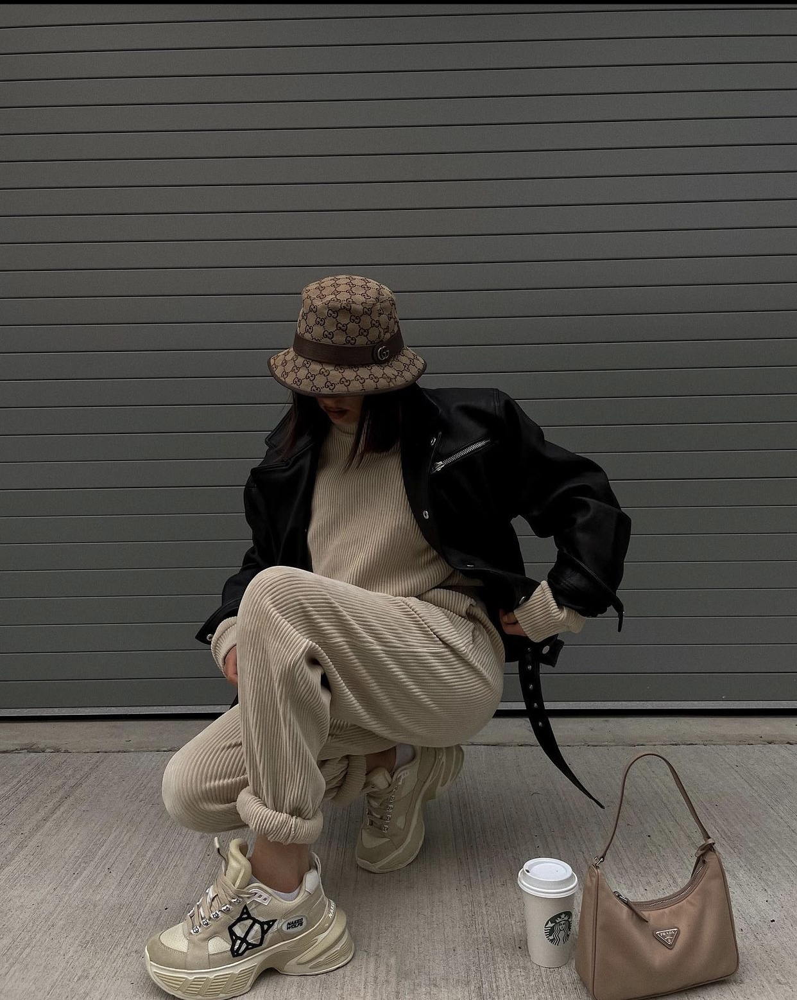
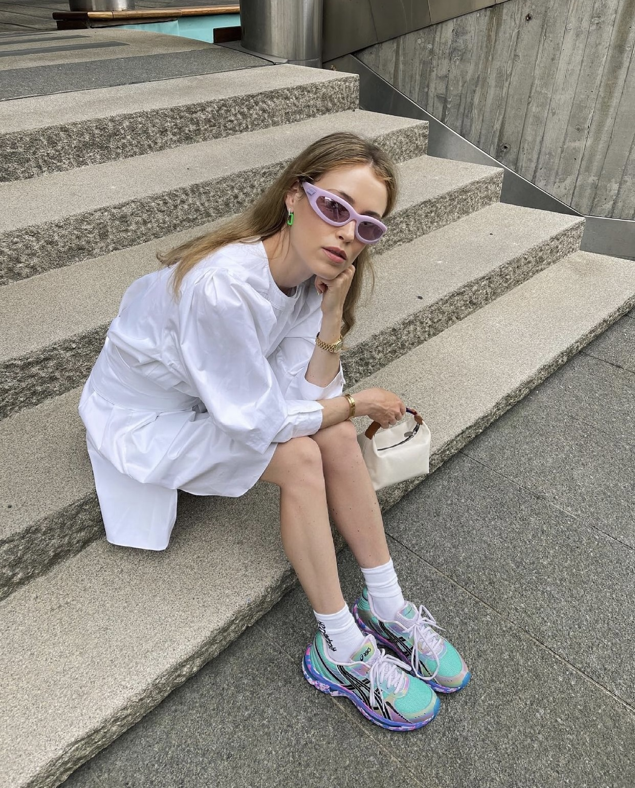
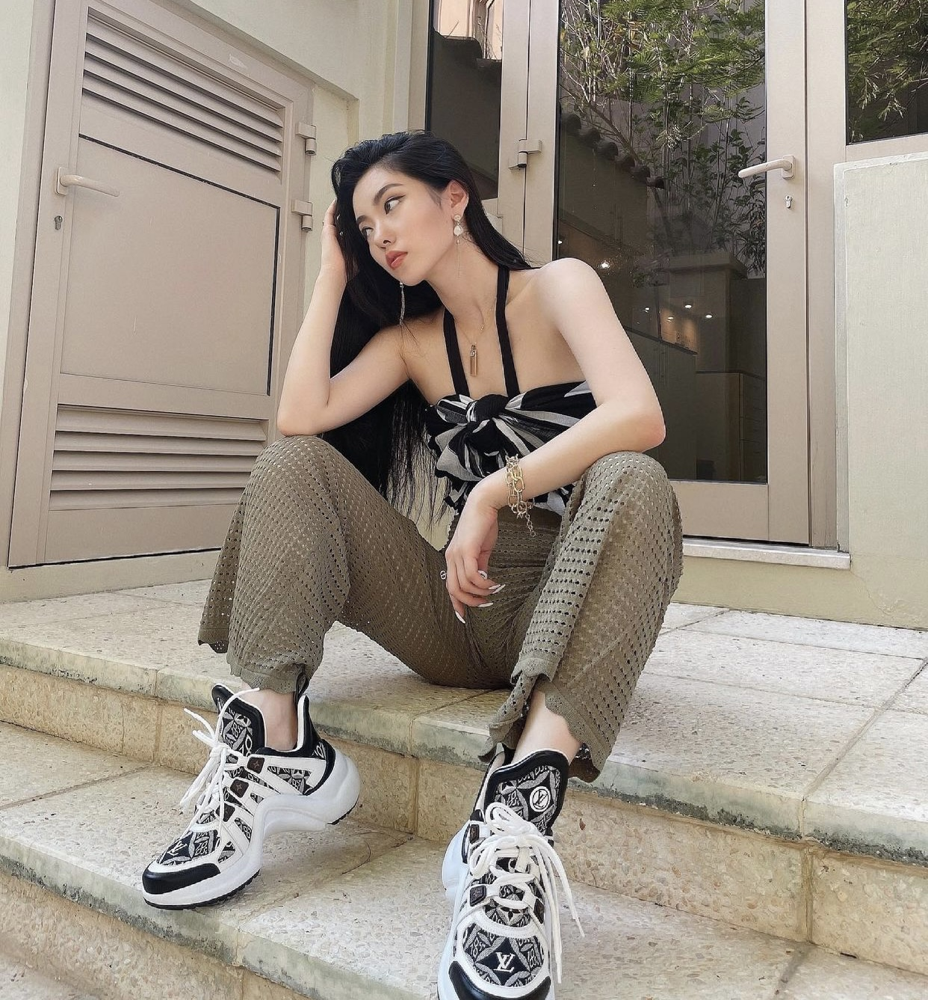

THIẾT KẾ ĐỘC ĐÁO
Đăng ngày: 05/11/2024
Mục Lục
GIÀY THỂ THAO CỔ ĐIỂN “VƯỢT THỜI GIAN”
Bất kể sự dịch chuyển của dòng chảy thời trang qua bao thập kỷ, những mẫu giày thể thao cổ điển vẫn đủ sức
khẳng định vị trí “ưu tiên”
của mình trong địa hạt giày dép thời trang. Nhờ thiết kế tối giản cùng độ linh hoạt cao trong đa dạng bản
phối, đây chính là món đồ
“must-have” có thể theo chân các tín đồ “từ nhà ra phố”, dù ở môi trường công sở hay những buổi hẹn hò cà
phê.

SÀNH ĐIỆU VỚI GIÀY THỂ THAO ĐẾ ĐỘN
Đối với các tín đồ thời trang sở hữu vóc dáng khiêm tốn, mẫu giày sneakers đế độn sẽ là giải pháp hoàn hảo
nhất mang lại
sự thoải mái, trẻ trung và còn giúp “ăn gian” chiều cao một cách đáng kể. Không bất tiện và gò bó đôi chân
như giày cao gót,
xu hướng đế độn ở giày thể thao ngày nay dần được cải tiến trong thiết kế và công nghệ nhằm giúp bạn thoải
mái hoạt động và
có thêm đa dạng lựa chọn tuỳ thuộc vào nhu cầu và sở thích cá nhân. Nếu đã quá quen thuộc với kiểu đế
platform bằng phẳng,
hãy “đổi gió” cùng dáng chunky cá tính đang được hội IT-Girl tích cực lăng xê trong thời gian vừa qua.

NĂNG LƯỢNG HỨNG KHỞI TRONG CÁC GAM MÀU NỔI BẬT
Không chỉ xuất hiện trên các trang phục quần áo, “sân chơi” màu sắc color-blocking tiếp tục đổ bộ vào thế
giới sneakers tạo nên
“bản giao hưởng” đầy mới mẻ cho không khí làng mốt mùa Thu-Đông năm nay. Nhờ sự giao thoa “có chủ đích” giữa
các gam màu nóng,
lạnh trên cùng một chủ thể mà cách phối đồ color-blocking luôn đem lại cho người mặc một tinh thần và năng
lượng tích cực. Đây
cũng là một điểm nhấn “đắt giá” khiến tổng thể diện mạo của bạn dù đơn điệu đến đâu cũng trở nên tươi mới
trong vòng một nốt nhạc.

ĐỔI MỚI CÙNG GIÀY THỂ THAO THIẾT KẾ FUTURISTIC
Bên cạnh giày cổ điển, các thiết kế mang “hơi thở” futuristic (vị lai) cũng được đông đảo giới trẻ tích cực
đón nhận.
Lần lượt được “trình làng” từ các “ông lớn” trong ngành thời trang và bùng nổ khắp các sàn diễn cao cấp điển
hình như
Louis Vuitton Archlight cho đến Adidas Yeezy 700, thiết kế này sẽ là lựa chọn tối ưu cho những tín đồ sẵn
sàng trải
nghiệm sự đột phá mới trong phong cách thời trang.
